Roselia is one of the original 5 mains bands of the BanG Dream! Franchise and is also one of the 4 live bands. The band name was taken as a combination of
the two flowers "Rose" and "Camellia". The group consists of in-universe members
Minato Yukina (Vocalist), Hikawa Sayo (Guitarist), Imai Lisa (Bassist), Udagawa Ako (Drummer), and Shirokane Rinko (Keybordist).
They're regarded as professional musicians and a highly talented band.
The band was formed in 2017 with the same voice actresses to date except for Endou Yurika (Lisa's former VA) and Akesaka Satomi (Rinko's former VA).
About a year later in 2018, Nakashima Yuki replaced Endou Yurika due to unspecified health concerns, while Shizaki Kanon replaced Akesaka Satomi
due to her hearing problems and after experiencing sudden deafness twice during live performances.
In-universe, the band was formed by Yukina with a single goal in mind, that is for the band to be a part of and perform in the Future World Fes. The band practices
frequently at CiRCLE but they also practice at other live houses. They take everything related to music seriously and rehearse to make everything perfect
during their performances.
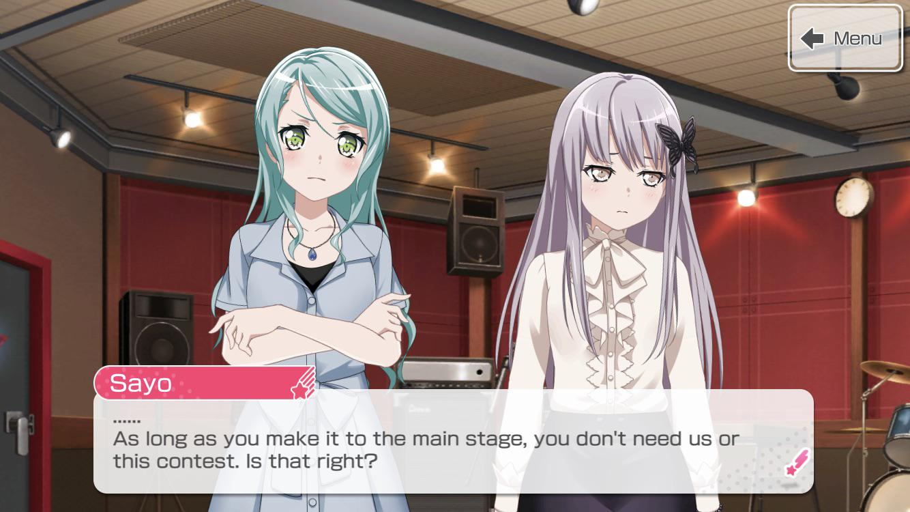
Roselia currently has 3 band stories in the JP Version of the game, with the EN Version only having 2 so far. The 3 band stories "Bloom of the Blue Rose",
"Neo-Aspect", and "Sprechchor" consist of 50 chapters overall.
MEDIA
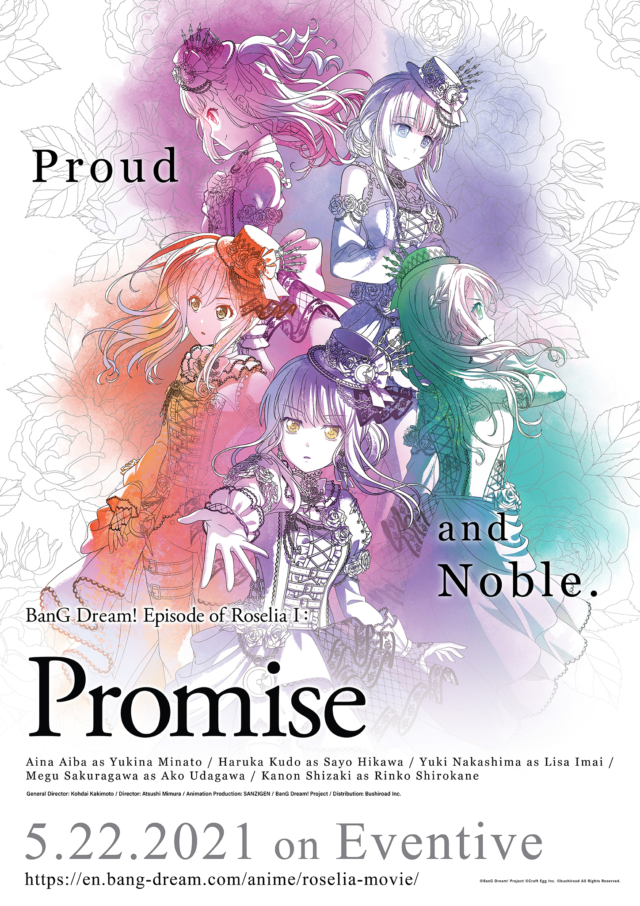
Roselia is featured in all 3 seasons of the anime being one of the main bands along with 6 others. They are also featured in GARUPA☆PICO with Yukina
being one of the singers of the theme songs for each season alongside the other vocalists of each band.
With Roselia being one of the 5 original bands, they were a part of "BanG Dream! FILM LIVE", the first movie of the franchise, and were also featured in the sequel
"BanG Dream! FILM LIVE 2nd Stage", this time with Morfonica and RAISE A SUILEN.
The band also has their own film series called "Episode of Roselia" which was animated by Sanzigen Inc. It consists of 2 parts, "Promise" (約束, "Yakusoku") and
"Song I am" which premiered on April 23 and June 25, 2021 respectively in Japanese cinemas.
These also premiered in other countries such as Canada, USA, Taiwan, Hong Kong, South Korea, Singapore, Malaysia, and Indonesia.
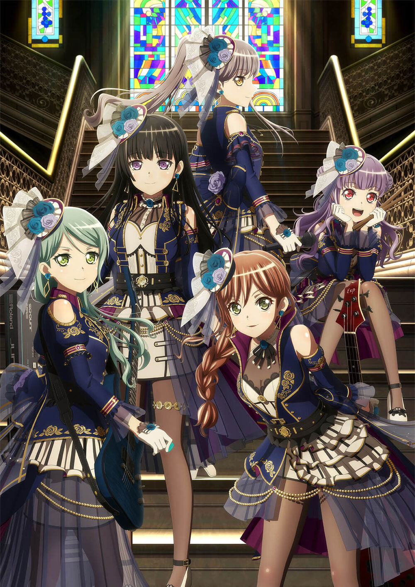
MEMBERS / CHARACTERS
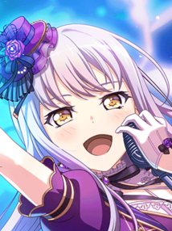
Class: 3-A Birthday: October 26 Height: 155cm
Minato Yukina (湊 友希那)
Minato Yukina is the leader and vocalist of Roselia. She is known for her powerful vocals yet she is also a somewhat cold and serious individual.
She started singing because of her father, who is also a singer, and is very passionate about it.
She is a 3rd year student at Haneoka Girls' High School and is classmates with Lisa. She is childhood friends with
Lisa. Her epithet is "The Blooming Rose of Purple Flames".
Class: 3-A Birthday: March 20 Height: 161cm
Hikawa Sayo (氷川 紗夜)
Hikawa Sayo is the guitarist of Roselia. She has a fussy and serious personality similiar to Yukina. She is formal, and tends to be stubborn at times.
She is the older twin of Hina from Pastel*Palettes.
She is a 3rd year at Hanasakigawa Girls' High School, is part of the student council and
the disciplinary committee, and classmates with Rinko. Her epithet is "Sadness Metronome".
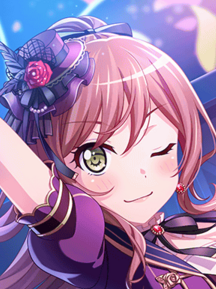
Class: 3-A Birthday: August 25 Height: 158cm
Imai Lisa (今井 リサ)
Imai Lisa is the bassist. She is childhood best friends and neighbors with Yukina. She is a lively, cheerful, caring, and supportive girl who keeps the band
together through tough times. Despite this, she believes she is the least skilled member and would seem soft at times.
She dropped playing bass and picked it up again when she was insisted by Yukina to join her band.
She is also a 3rd year high school student at Haneoka. She follows "gyaru" fashion. Her epithet is the "Goddess of Kindness".
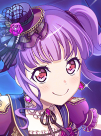
Class: 1-A Birthday: July 3 Height: 148cm
Udagawa Ako (宇田川 あこ)
Udagawa Ako is the drummer. Her personality can be described as chuuni or chuunibyou, having illusions of magical and dark powers. She is cheerful like her Lisa-nee
but can be noisy and get scolded for. She is a passionate drummer who tries to do her best every time. Her older sister is Tomoe from Afterglow.
She is a 1st year at Haneoka. She calls Rinko as "Rinrin". Her epithet is "Blackish Fallen Angel Something Something".
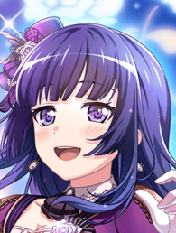
Class: 3-A Birthday: October 17 Height: 157cm
Shirokane Rinko (白金 燐子)
Shirokane Rinko is the keyboardist. She is a talented keyboardist, even considered as a prodigy, and won a music contest even before becoming a part of the band
. She is a shy girl and scared of performing live. By knowing how to sew, she became the costume designer of the band and does everything by herself.
She is a 3rd year, the student council president of Hanasakigawa, and is classmates with Sayo. Her epithet is the "Unmovable Master".
VOICE ACTRESSES / SEIYUUS (LIVE BAND)
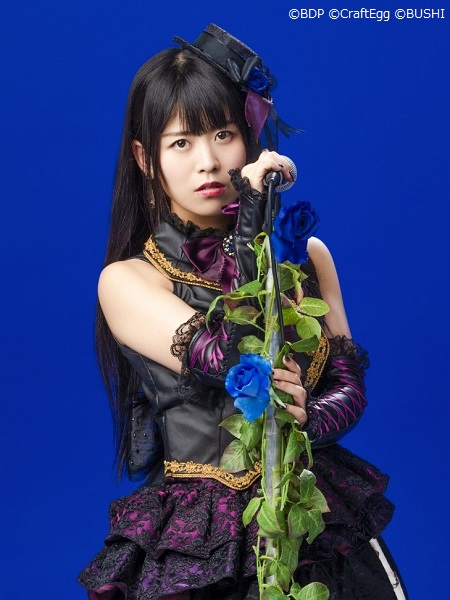
Nickname: Aiai Age: 33 Height: 158cm
Aiba Aina (相羽 あいな)
Aiba Aina, or Aiai, is the vocalist of Roselia who also voices Minato Yukina. She was born on October 17, 1988. Her hobbies are dancing and singing (karaoke).
Prior to becoming a seiyuu, she was a pro wrestler known as "Yuuki Harima". She is energetic and comedic.
She is a seiyuu under HiBiKi.
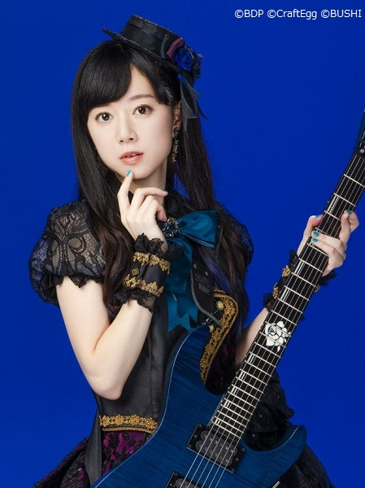
Nickname: Kudoharu Age: 32 Height: 151cm
Kudou Haruka (工藤 晴香)
Kudou Haruka, or Kudoharu, voices Hikawa Sayo and is the guitarist of the band. She was born on March 16, 1989.
She started off as a model in 2003 and debuted as a seiyuu in 2005. She is a skilled artist and is fluent in English. She also watches movies and reads books.
She is affiliated with Ace Crew Entertainment.
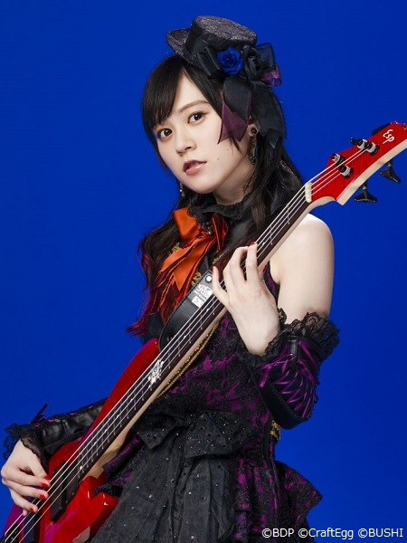
Nickname: Yukkii Age: 24 Height: 159cm
Nakashima Yuki (中島 由貴)
Nakashima Yuki, or Yukkii, voices Imai Lisa and is the bassist. She was born on September 12, 1997. She was a junior model until middle school
and was a part of the idol group "Earth Star Dream" until 2017. She replaced Endou Yurika (due to health concerns) and took the role of Imai Lisa in 2018. Her hobbies are
singing, dancing, playing video games, and watching anime. She has a gaming YouTube channel with Meguchi called "YukiMeguTV".
She is a seiyuu under Beffect.
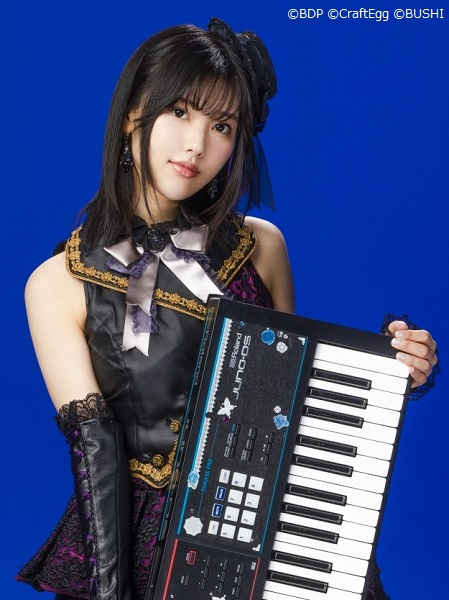
Nickname: Non-chan Age: ? Height: 158cm
Shizaki Kanon (志崎 樺音)
Shizaki Kanon, or Non-chan, voices Shirokane Rinko and is the keyboardist. Her birthday is on February 8 with the year being unknown, but she is assumed to have the
same age as Yukkii. She replaced Akesaka Satomi's role in 2018 due to hearing concerns. She has been playing the piano since first grade and is talented in singing. She also watches movies, listens to music, and performs well in classical ballet
and calligraphy.
Just like Kudoharu, she is affiliated with Ace Crew Entertainment.
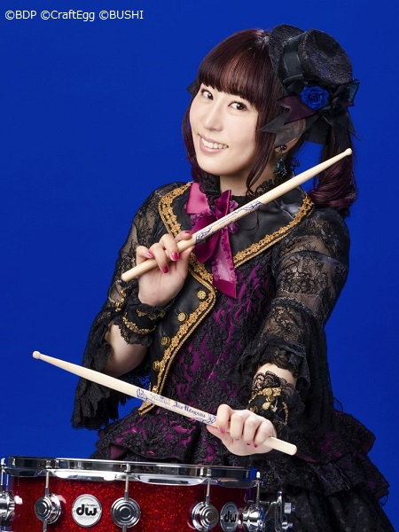
Nickname: Meguchi Age: 33 Height: 153cm
Sakuragawa Megu (櫻川 めぐ)
Sakuragawa Megu, or Meguchi, voices Udagawa Ako and is the drummer. She was born on October 24, 1988, exactly a week younger than Aiai. Her hobbies are singing, sewing,
yoga, and playing games. She is very energetic, as seen in live performances. Along with Yukkii, they have a gaming YouTube channel called "YukiMeguTV".
She is signed under Lantis.
DISCOGRAPHY
ORIGINAL SONGS:
Roselia currently has 2 albums "Anfang" and "Wahl" which were released on May 2018 and July 2020 respectively. The band has a total of 34 unique original songs.
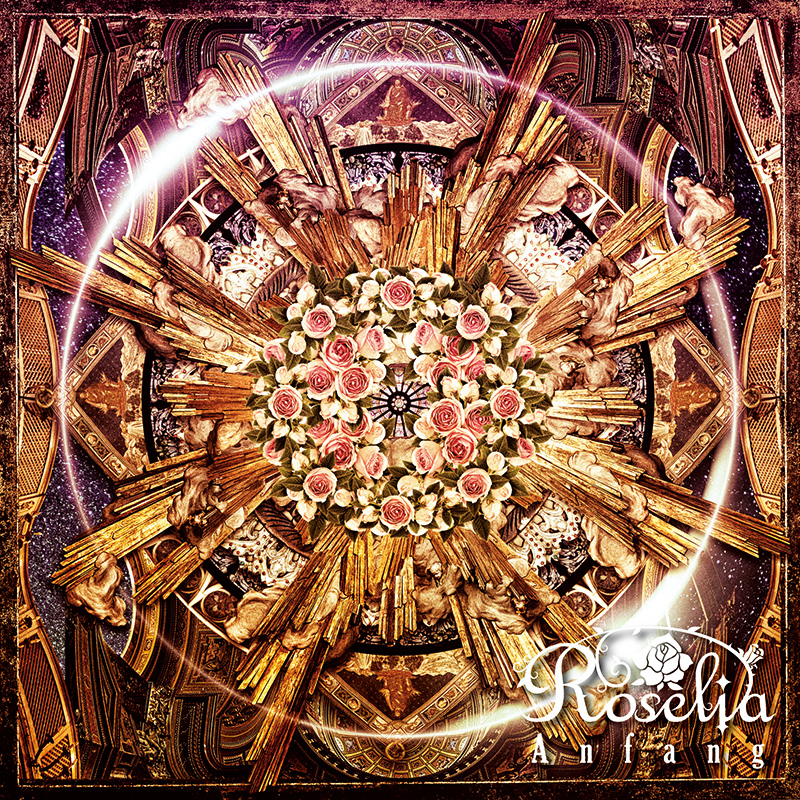
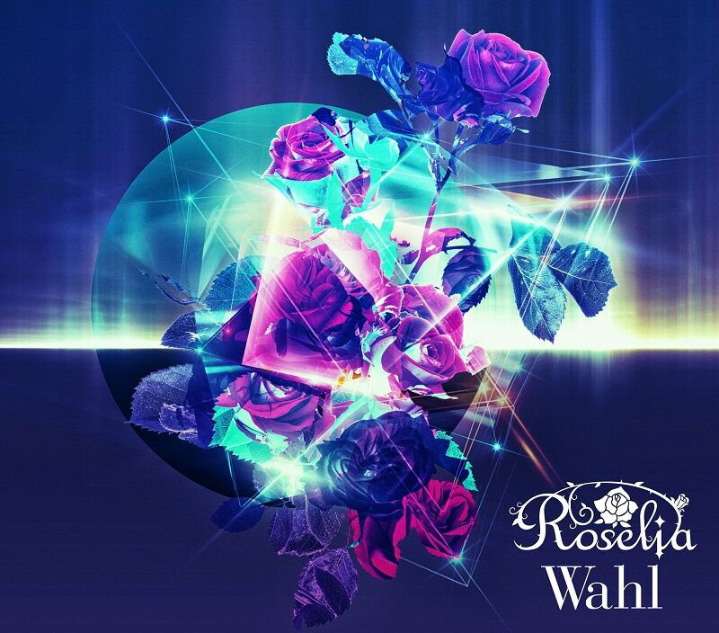
Anfang
Wahl
- HEROIC ADVENT -
BLACK SHOUT
Determination Symphony
Hidamari Rhodonite
Kiseki
Legendary
LOUDER
Neo-Aspect
Nesshoku Starmine
ONENESS
Opera of the wasteland
Re:birth day
"UNIONS" Road
Avant-garde HISTORY
BRAVE JEWEL
Break your desire
Determination Symphony
FIRE BIRD
Neo-Aspect (Remastered)
R
Re:birth day
Safe and Sound
Song I am.
Yakusoku
Other Original Songs:
Blessing Chord
Keep Heart
Original Call
Our Carol
overtuRe
PASSIONATE ANTHEM
Proud of oneself
Ringing Bloom
Sanctuary
Sing Alive
Singing "OURS"
Sprechchor
ZEAL of proud
Roselia - Ringing Bloom
Roselia - R
COVER SONGS:
There are a total of 29 cover songs by Roselia.
Bad Apple!! (feat. nomico)
Believe in my existence
Charles
ETERNAL BLAZE
Fatima
Guren no Yumiya
Hacking to the Gate
Hishoku no Sora
Kimi no Kioku
KING
Kouga Ninpouchou
Migikata no Chou
Miiro
My Dearest
Namae no Nai Kaibutsu
Paradisus-Paradoxum
Red fraction
Roku-chou Nen to Ichiya Monogatari
Shangri-La
Shin Ai
Sister's Noise
SPARK-AGAIN
Synchrogazer
Tamashii no Refrain
The Everlasting Guilty Crown
This game
Tori no Uta
Tsukiakari no Michishirube
Zankoku na Tenshi no Teeze
Akino from bless4 - Miiro
(covered by Roselia)
COLLAB SONGS (with Other Bands):
Original:
Cover:
Hitori Janain Dakara
Kyouen Red x Violet
Ohmori Icchou! GARUPA☆PICO
PICOtarumono, FEVER!
Picotto! Papitto!! GARUPA☆PICO!!!
Quintuple☆Smile
TWiNKLE CiRCLE
Donten
Kakumei Dualism
SAVIOR OF SONG
Sousei no Aquarion
Nano feat. MY FIRST STORY - SAVIOR OF SONG
(covered by RAISE A SUILEN feat. Minato Yukina)
LIVE PERFORMANCES
Roselia has held 12 live concerts since 2017 and have an upcoming live on May 2022.
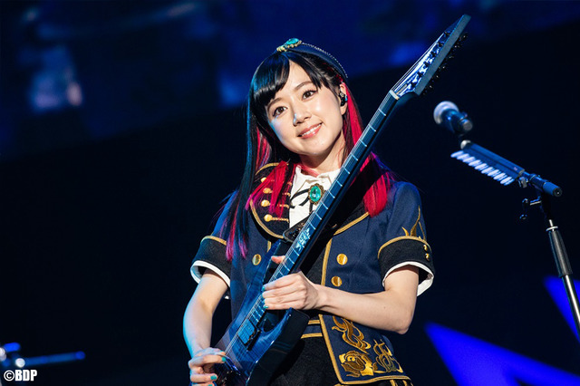